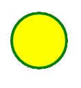

<!-- 
  SVG <svg>

  É uma marcação, estilo html, mas não é para textos, e sim para fazer imagens.

  para entender melhor
  - Imagem rasterizada x Imagem vetorizada

  Beneficios:
  - Mais leve
  - Mais detalhada
  - Maior acessibilidade e SEO
  - Pode ser editada via CSS ou atributos

  Desvantagens:
  - Pode ser mais complicado de trabalhar
  - Quanto mais complexa a imagem, mais trabalho para o navegador
  - Navegadores mais antigos não possuem suporte a essa tag
 
  Para fotografias, ainda prefira usar imagens rasterizadas.
  .png, .jpg, jpeg
 -->

<!-- Rasterizada -->


<!-- Vetorizada -->
<svg width="100" height="100">
  <circle cx="50" cy="50" r="40" stroke="green" stroke-width="4" fill="yellow"/>
</svg>